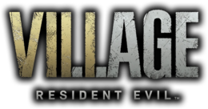
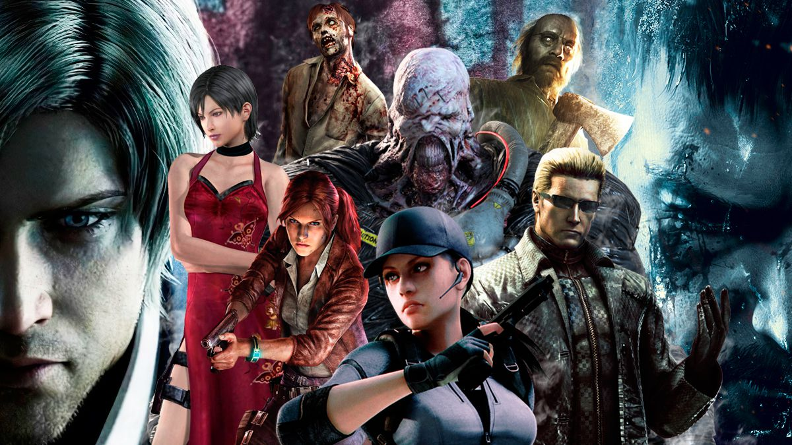
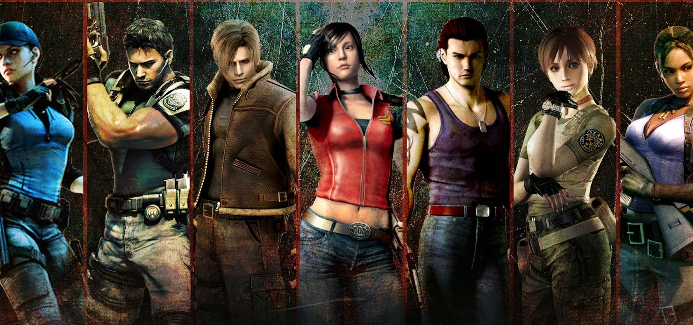
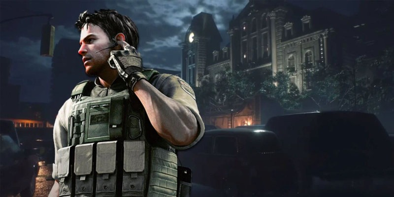
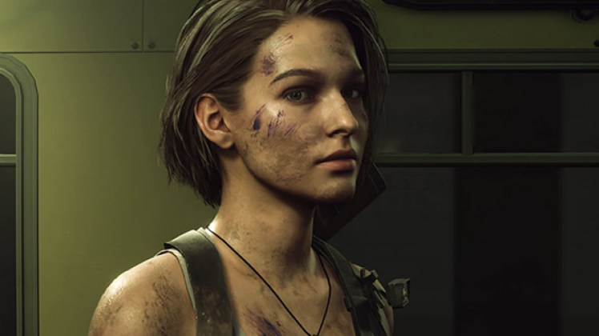
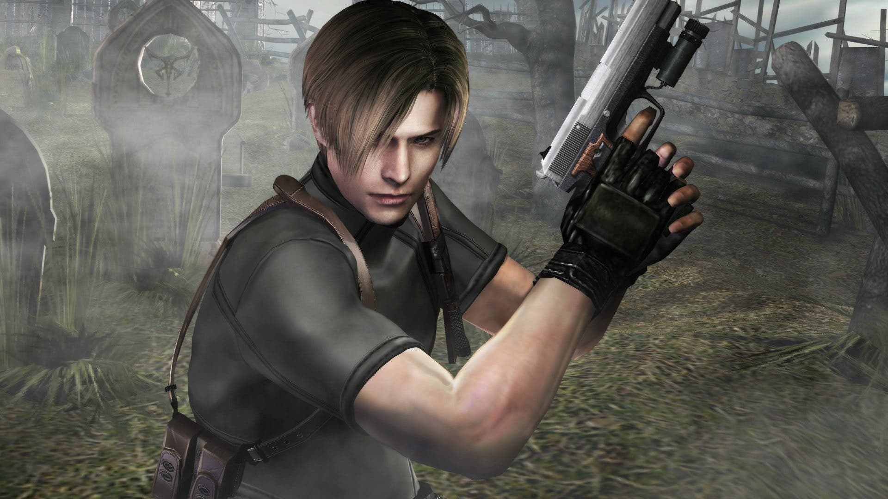
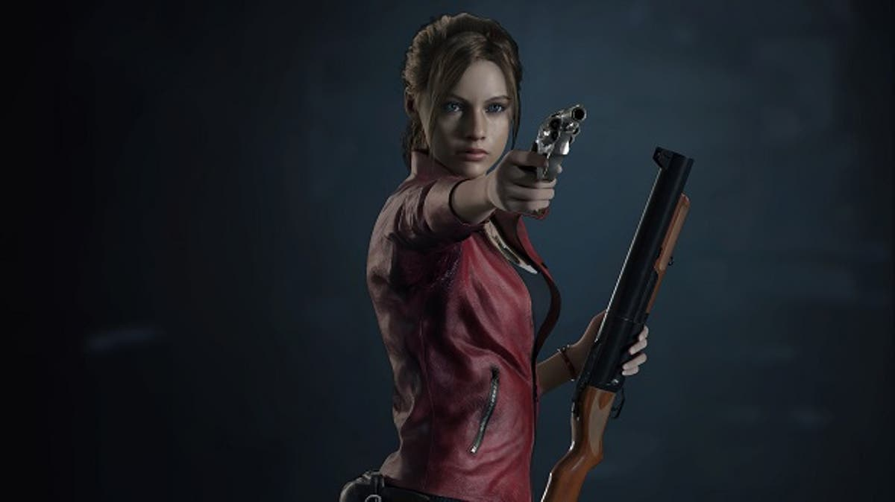
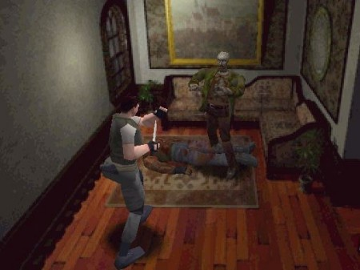
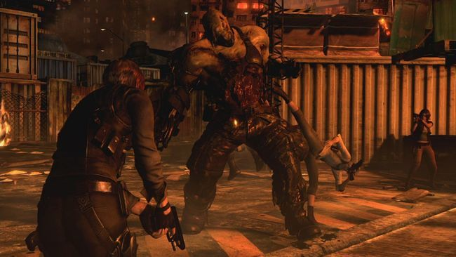
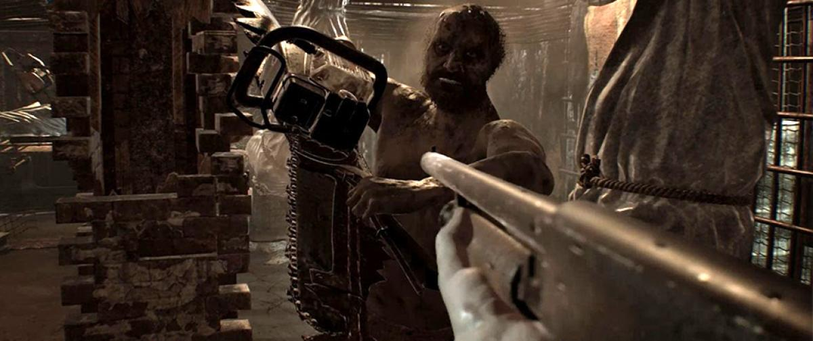

¿Qué es "Resident Evil" como franquicia de videojuegos?
Biohazard, nombre con que se conoce en Japón, rebautizado en Estados Unidos y Europa como Resident Evil (“el mal que reside”) es una serie de videojuegos y una franquicia de medios, entre los que se incluyen manga, novelas, películas y coleccionables como figuras de acción, guías de estrategia y otras publicaciones. Desarrollados por Capcom y creados por Shinji Mikami la mayoría, al año 2014, se han vendido 61 millones de copias de los videojuegos en todo el mundo. Así como en la saga principal de videojuegos, como en otros medios, la trama gira en torno al mismo conflicto: la amenaza bioterrorista. Un peligroso virus se ha propagado por error o intencionalmente por la Corporación Umbrella, este al infectar a los humanos, los transforma en seres amorfos y monstruos.

Argumento o historia
La historia da comienzo en las Montañas Arklay, a las afueras de la localidad ficticia de Raccoon City, cuando una oleada de extraños asesinatos empieza a ocurrir cerca de la ciudad. Algunos excursionistas son encontrados muertos en puntos cercanos, parcialmente devorados, aunque no se sabe quién o que ha sido el causante de dichas atrocidades. Para evitar que el pánico cunda por la ciudad, el departamento de policía decide enviar a los S.T.A.R.S., la unidad de operaciones especiales de Racoon City cuyos miembros están especialmente entrenados en la labor de tácticas de rescate y supervivencia, para investigar a fondo el caso. Es así como el equipo Bravo es enviado a investigar los sucesos extraños en las montañas Arklay. Entonces, se pierde el contacto con este equipo y es cuando un segundo equipo (el equipo Alpha) comandado por Albert Wesker le asignan la misión de continuar la investigación, así como encontrar el paradero del equipo Bravo.
La mayoría de las entregas comienzan durante o después de la gran oleada destructiva inicial. En esta situación los protagonistas, generalmente Chris Redfield, Jill Valentine, Leon S. Kennedy, Claire Redfield, (y algunos más), deben sobrevivir y buscar la forma de escapar mientras se enfrentan a los zombis y monstruos no solo nacidos del contacto con los muertos, sino también de otros que se han fugado de los laboratorios de desarrollo de las armas biológicas de Umbrella Corporation creados a propósito (como los llamados Tyrant) y un sin fin de armas biológicas que los protagonistas deberán superar para lograr escapar. El contexto bajo el que se desarrolla la historia solo se vislumbra a medida que avanza el juego; los diferentes personajes y lugares que visita el jugador proporcionan pistas respecto a lo que sucedió a la gente y lo que debe hacer.

Entregas principal que se encuentran es sincronía con la nueva entrega
En esta lista solo incluyen los títulos principales de la franquicia sin contar spin-offs, por el motivo de que si se cuentan entregas secundarias serian mas de 20 y algunas no cuentan con relevancia o son historias por aparte de la principal:
- Resident Evil (1996)
- Resident Evil 2 (1998)
- Resident Evil 3: Nemesis (1999)
- Resident Evil 4 (2005)
- Resident Evil 5 : Guardians (2009)
- Resident Evil 6 (2012)
- Resident Evil 7: Biohazard (2017)
Personajes principales a lo largo de la saga
- Chris Redfield: Protagonista del primer Resident Evil, Resident Evil Code Veronica, Resident Evil: The Umbrella Chronicles, parte del Resident Evil: Revelations, Resident Evil 5, Resident Evil 6, también es uno de los protagonistas principales en Resident Evil: The Darkside Chronicles y Resident Evil 7, y aparece en la película Resident Evil: Vendetta. Chris Redfield comenzó su carrera militar en las Fuerzas Aéreas de Estados Unidos luego se unió a los S.T.A.R.S. ahora es exmiembro de dicha unidad, actualmente fundador y miembro de la BSAA. Su mayor enemigo fue Albert Wesker. Poseedor de una hoja de servicios repleta de elogios y de medidas disciplinarias por igual, sus superiores describen a Chris como «intransigente», «dotado de una dedicación inquebrantable» y poseedor de un alto nivel de adaptación

- Jill Valentine: Protagonista del primer Resident Evil, Resident Evil 3, Resident Evil: The Umbrella Chronicles, parte del Resident Evil 5 junto con Chris y en Resident Evil: Revelations. Pertenecía a la misma unidad S.T.A.R.S. y subdivisión que él. Actualmente trabaja para la BSAA.

- Leon S. Kennedy: Protagonista del Resident Evil 2, Resident Evil 4, Resident Evil: Darkside Chronicles y Resident Evil 6 . También aparece en la película Resident Evil Degeneration, Resident Evil: Damnation y Resident Evil: Vendetta. Exmiembro del Departamento de policía de Raccoon; tras vivir los sucesos de la catástrofe de esta ciudad, Actualmente trabaja para el Gobierno de los Estados Unidos, entabla una enemistad con Umbrella y la persigue como objetivo personal. Su mayor enemigo es Jack Krauser, sin embargo, muere en Resident Evil 4 cuando Leon lo vence (cabe destacar que no fue Leon sino que, en realidad, fue Ada quien mata a Krauser, esto se entiende con el minijuego de Resident Evil 4, Separate Ways).

- Claire Redfield: Protagonista del segundo videojuego de la saga principal, junto con Leon, Resident Evil Code: Verónica, Resident Evil: The Darkside Chronicles, y Resident Evil: Revelations 2 , también aparece en la película Resident Evil Degeneration y la manga Resident Evil: Heavenly Island. Ex-Estudiante, Es hermana de Chris y estuvo en Raccoon City tratando de encontrarlo. Es una sobreviviente al igual que Leon y mutuamente sobreviven. Tres meses después, viaja a Europa para reencontrarse con su hermano sin éxito: La captura un equipo de Umbrella y la llevan a la isla Rockford, allí consigue escapar y reunirse con Chris luego se une a una organización no gubernamental llamada TerraSave.

Jugabilidad
Los primeros juegos tenían un ángulo de cámara con planos fijos en 3D que ayudaban a causar miedo e incertidumbre, salvo en los tiempos de carga que había entre habitaciones en los que el juego simulaba una vista en primera persona, ejemplos claros de esto son los 3 primeros juegos: RE1, RE2, y RE3, Code Veronica o la saga Outbreak: 1 y 2 y el Resident Evil Zero. Esto fue cambiando conforme al tiempo.

La nueva era da la bienvenida a la tercera persona, y así también al Survival Action.
Desde la llegada de Resident Evil 4 (2005) se conserva mayoritariamente la tercera persona y se cambia a una vista sobre el hombro, al mismo tiempo que se despide al género survival horror y se acerca más al Survival Action.
Con la llegada de Resident Evil 5 (2009) esto se acentuó más, dando aún más importancia a la acción que el terror.
Sin Embargo con la llegada del título Resident Evil: Revelations (2012) y Resident Evil: Revelations 2 (2015) esto cambió, dando más importancia al terror, con una jugabilidad más pausada, pudiéndose apuntar y caminar al mismo tiempo, esta es mejorada gracias a la cámara en tercera persona que maneja el juego , mezclando el manejo del personaje al estilo Resident Evil 4 con el de Resident Evil 5.
Resident Evil 6 (2012) llegó mezclando muchos de los elementos de la nueva era, mejorado el sistema de coberturas, mejorando el sistema de peleas cuerpo a cuerpo, y también incorporando la opción de apuntar y caminar al mismo tiempo, con 4 campañas, una centrada en el terror, otras 2 en la acción pura y otra en el sigilo.

También hay otros tipos de jugabilidad por ejemplo la primera persona
También hay otros juegos con diferentes jugabilidades a las mencionadas anteriormente, por ejemplo los 3 juegos Survivor (Survivor, Survivor 2: Code Veronica y Dead Aim), o los 2 juegos Chronicles (Umbrella Chronicles, Darkside Chronicles) y Resident Evil 7 Aunque cambia a perspectiva a primera persona; vuelve algunas cosas de su pasado: como el guardar objetos en baúles y los casetes como los sustitutos de la máquinas de escribir

Página oficial de "Resident Evil Village"
Página Capcom (Resident Evil Village)
Regresar a la página principal